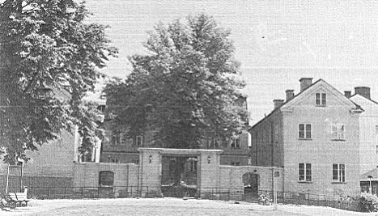
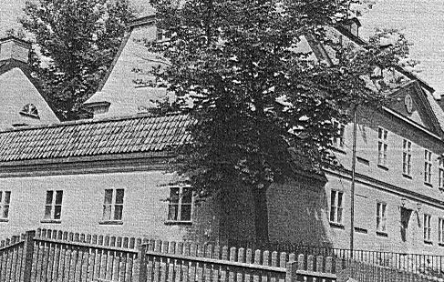
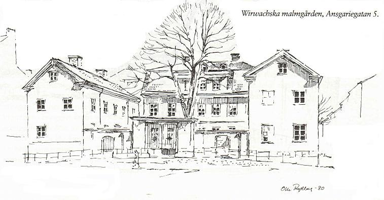

|
Wirwachs malmgård Den Wirwachska malmgården i nuvarande kvarteret Läkten med adress Ansgariegatan 5 har mycket att berätta. Dess historia börjar långt tillbaka i tiden, och höjder och dalar har växlat som för alla våra gamla fina hus i takt med vad politikerna har ansett om våra kulturminnen. Redan på 1720-talet fanns här en malmgård tillhörig skeppsklareraren Nils Smitz. 1740 ägs gården av handelsmansänkan Smitz' arvingar, som arrenderade ut den till trädgårdsmästare J Lundberg. 1744 bor trädgårdsmästare P Bergman här och 1747 trädgårdsmästare Nils Ahlgren. Denne hade också hyresgäster, bl a en ylle- och stoffvävare, som troligen också hade verkstad här.
 Malmgården från väster
Trots den stora åldersskillnaden tycks förhållandet mellan de båda familjerna Wirwachs och Senckpiehl ha varit osedvanligt fint. Området vid Hornskroken i kvarteret Kaninen, som det då hette, inköptes av de båda apotekarna. De byggde malmgården tillsammans och nyttjade den sedan tillsammans. De överenskom också att gården skulle "hel och hållen tillfalla den av oss eller våra hustrur, som längst efterleva". Apotekare Wirwachs dog 1783, hans hustru 1797, apotekare Senckpiehl 1811 och dennes hustru 1812. Det var ett vackert stenhus som de båda familjerna kunde flytta in i vid mitten av 1770-talet. Ritningarna hade gjorts av murmästaren Johan Wilhelm Elies och huset låg där Hornsgatan gick över i Hornskroken, vilken sedan i sin tur gick över i Hornstullsgatan. Infarten byggdes alltså med Hornstullsgatan som en tänkt allé rakt in mot huset, som omgärdades av en mur med inkörsport. På ömse sidor om manbyggnaden fanns två flyglar som inrymde stall, fähus, vagnshus, mangelbod, foderskulle, vedbodar och bagarstuga (man kan fortfarande se var den legat). Om dessa flyglar var låga och rundade och ersattes år 1825 eller om det är de nuvarande raka tvåvåningsflyglarna som är de första, tycks det vara olika uppfattningar om. Detta sätt att bygga med fägård och mangård tillsammans är av utländskt ursprung. I Sverige har man alltid strängt brukat skilja på de olika delarna, såvida inte utrymmet lagt hinder i vägen. Taket på huvudbyggnaden var och är brutet med två fall, varav det övre är plåtbetäckt och det nedre belagt med tegel. Efter familjerna Wirwachs och Senckpiehl bytte ägarna av varandra: 1811 ryttmästaren välborna K A Roos, 1820 ryttmästaren och bryggaren K Brandelius, 1821 Herrar S Sjöbeck och S M Grahm, 1843 handelsmannen och bryggaren N Hartman, 1845 fabrikören F V Reuszner, 1858 bokbindaren K O Hagman. Den 8 juni 1883 övergår egendomen i Stockholms stads ägo.
 Malmgården från Brännkyrkagatan
På gården mellan flyglar och manbyggnad växte och växer fortfarande vårdträdet - en stor vacker lind. Öster om huvudbyggnaden finns också några lindar kvar. Det är allt som finns kvar av apotekarnas stora trädgård. De hade bl a åttio fruktträd och mängder av medicinalväxter. Det var ju viktigt att tillgodose det egna apotekets behov. Det berättas om hur Hornskrokspojkarna ännu i slutet av förra seklet för att kunna plocka av frukten försökte forcera planket som omgav trädgården och som var försett med vassa, upprättstående spikar. Det finns ytterligare minnen kvar sedan den första tiden. Norr om manbyggnaden finns en ekonomigård med en avskiljande mur. Innanför denna fanns stenbodar för förvaring av ved mm. Dessa bodar revs så sent som 1966-67 men muren fick, tack och lov, stå kvar. Varorna togs alltså in över rännstenen från den snedgående vägen. De två låga smala byggnaderna vid manbyggnadens gavlar är av senare datum. Under 1930- och 1940-talen användes huset dels som barnkrubba, dels som bostäder. 20 lägenheter, de flesta på ett rum och kök, var uthyrda. Därutöver hade man inrett en butik och hyrde också ut källarutrymmen. Högalids församlings kyrkofullmäktige ansökte 1944 om att fa använda malmgården som ungdomsgård men ombads av staden att återkomma, då mera normala förhållanden hade inträtt på bostadsmarknaden. Detta skedde inte utan folkpartiet tillträdde som hyresgäst år 1968. Sedan dess har huvudbyggnaden använts för folkpartiets verksamhet, den ena flygeln som bostad för tre familjer och den andra för Studieförbundet Vuxenskolans verksamhet för Föreningen för Utvecklingsstörda Barn (FUB). Som huset syns idag är det utvändigt välskött men invändigt delvis i stort behov av reparation.
Pillertrillarhuset Folk kan i åratal bo granne med kulturhistoriska märkvärdigheter utan att känna till dess namn eller plats i historien. Först när en platta med "bruksanvisning" kommit upp invid porten har kanske intresset väckts. Hus är som vilda växter, det är mycket roligare att titta närmare på dem sedan man fått veta vad de heter och vad det är för märkvärdigt med dem.
 Jag gissar att många som bor eller har bott kring Ansgariegatan är och har varit okunniga om vad det vackra huset med den ståtliga linden innanför porten är för något. Wirwachska malmgården handlar det sålunda om. Namnet är onekligen lite besvärligt och tyder på utländsk härkomst. Arne Munthes långa, utförliga historik över västra Södermalm lämnar en del fakta om saken. Byggherren, Johan Michael Wirwach, var invandrad tysk liksom kompanjonen Johan Christian Senckpiehl. Tillsammans ägde de apoteket Enhörningen i Götgatsbacken. Apoteket var efter Mariabranden 1759 tillfälligt inrymt i Södra stadshuset. Fasta (lagfart) på tomtområdet "förut tillhörigt trädgårdsmästaren Erik Ahlgren hade Wirwach erhållit 8 mars 1771". Köpet och tillkommande byggnader finansierades gemensamt av apotekarna Wirwach och Senckpiehl. Malmgården på Ansgariegatan byggdes på 1770-talet efter ritningar av J W Elies och med den märkliga överenskommelsen att fastigheten skulle ärvas av den längst överlevande änkan. Först dog Wirwachs änka. Det skedde år 1797. Hon hade till Maria församling testamenterat en stor summa pengar "varav räntan årligen skulle fördelas mellan elva ofrälse mäns änkor, intagna å församlingens fattighus". Som ensam ägare av malmgården levde sedan Senckpiehls änka ända fram till 1812. Nu har folkpartiet kansli i huset, som hyrs ut av Stockholms kommun. |